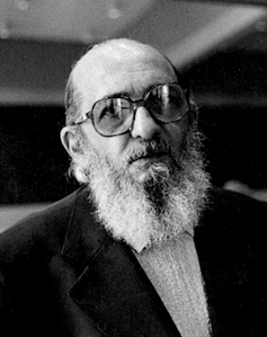

Goal
Welcome to Challenging Minds, Changing Lives. Our overall goal with this campaign is to rid society of the detrimental banking education model and provide support for the problem-posing education model. Promoting the problem-posing education model encourages critical thinking and creativity. Also, we want to empower students with their own ideas and perspectives. By empowering students with their own ideas and perspectives, we hope to promote social justice. We find that banking education seems to be the societal norm and believe this is due to a lack of exposure to the problem-posing education model. Moreover, we hope to spread more light on problem-posing education and one day eliminate the idea that students are just vessels of information. Finally, we find that problem-posing education enhances the overall learning of students. We hope to create a more just, equitable, and sustainable society by adopting problem-posing education.
Defining Banking Education
History and Literature
First Introduced by Paulo Friere (1968/1993), banking education is the idea of students being treated as vessels for information. In other words, education is seen as an act of depositing where the students are depositories and the teacher is the depositor (Friere, 1968/1993, p. 72). According to Tucker (2023), Friere (1968/1993) goes on to describe six major characteristics of banking education. These are the role of the teacher, the role of the student, their relationship, knowledge, society, and education. A great quote from Freire's Pedagogy of the Oppressed (1968/1993) can be read as “the teacher presents himself to his students as their necessary opposite; by considering their ignorance absolute, he justifies his own existence” (p. 73). We believe what Freire (1968/1993) means here is that the teacher believes in himself as a depositor of information. With this idea engrained in the teacher’s mind by society, and students accepting their teacher’s word, the teacher’s existence is therefore justified under the banking education model.
Pualo Friere (1921 - 1997)
Defining Banking Education
Today
Today, banking education can be seen not just in schools, but in employment as well. We find that examples of banking education in schools can be seen in textbooks and certain lecture styles. Textbooks often present information as objective truth. Therefore, students lack encouragement to question the assumptions and biases behind that information. Furthermore, lecture styles can follow banking education when the professor provides vast amounts of knowledge without encouraging students to ask questions or critically think. Outside the academic setting, training programs for workplaces often don't focus on developing skills and abilities for the job, and instead, train one’s compliance.
Understanding Banking Education
What Does Banking Education Look Like?
Banking education can take on many forms. To a student, banking education can bear resemblance to the factory model, where students are just vessels of information, waiting to move up in the world, only to deposit that information to the next generation. As a student, the banking education model could be seen as a system where memorizing and regurgitating information is necessary to be successful. For a teacher, the banking education model could look like themselves being the main figure of authority in the classroom. Teachers would be responsible for teaching lectures while the students would memorize and take notes.
Understanding Banking Education
What Does Banking Education Sound Like?
While banking education can look different between the teacher and student, differences can also be seen in the way banking education sounds. To a student, this may sound like a lecture approach, where the teacher introduces a topic and provides insight and information on the aforementioned topic. A student may hear the teacher use a tone of authority and power, as well as not encourage students to interact with one another or participate. From a teacher’s perspective, banking education could sound like a question-and-answer format when it comes to exams and assignments. This would include the expectation of students to memorize and regurgitate the information deposited by the teacher onto exams and assignments.
Understanding Banking Education
What Does Banking Education Feel Like?
A student in the banking education model may feel restricted and unengaging. Students might feel that they are not able to critically think or explore their own ideas, rather, they feel pressure to memorize information. The lack of participation felt by students could also lead to disengagement in learning or depletion of motivation. Finally, students may feel that the banking education model does not acknowledge their individual strengths and weaknesses. A teacher, may feel a sense of power and control over their students. This would closely align with an authoritarian figure where rules are enforced to ensure strict obedience to the teacher. However, a teacher may also feel that their ability to explore different teaching styles is limited. This can be due to a teacher’s self-image in seeing themselves as a depositor of information rather than facilitating critical thinking and active learning.
Defining Problem-Posing Education
History and Literature
“Problem-posing education is revolutionary futurity” (Freire, 1968/1993, p. 82). These wise words reinforce our need for the implementation of the problem-posing model in society. Likewise to banking education, Tucker (2023) outlines the same six criteria for problem-posing education determined by Freire (1968/1993). However, problem-posing education differs from banking education as it opposes the domesticating practice of rejecting the concepts of students as a vessel, and knowledge emerges through inquiry to efficiently grow in society. To sum it all up, we believe this powerful quote can be used as a medium; “the program content of the problem-posing method… emerges from the circumstances of the learners” (Freire, 1968/1993, p. 80).
Defining Problem-Posing Education
Today
Today, problem-posing education is seldom. However, universities such as Simon Fraser University do hold similarities to the model. While lectures commonly follow the banking education model, tutorials serve as a place for critical thinking, creativity, and collaboration. Furthermore, problem-posing education can be seen in schools through projects and flipped classrooms. This allows students to solve problems through critical thinking instead of memorizing information and regurgitating it.
Understanding Problem-Posing Education
What Does Problem-Posing Education Look Like?
To a student, problem-posing education can look different. Students may see a more engaging learning experience. This would include the ability to ask questions or be asked questions, critically think, and explore their own ideas. A student may also see problem-posing education as a model that fosters independence and self-confidence as the encouragement to think critically can lead to students finding solutions to problems on their own. Finally, a student could see problem-posing education as a more dynamic learning experience. Compared to a teacher, a teacher might look at problem-posing education as a method where they are the facilitator of learning, rather than the figure of authority. A teacher might also look at problem-posing education as an opportunity to take a collaborative approach. Moreover, a teacher could work with students to solve problems and provide guidance, and feedback.
Understanding Problem-Posing Education
What Does Problem-Posing Education Sound Like?
The problem-posing education model may sound more interactive to a student. This could include hearing the teacher’s encouragement to ask questions, think critically, and explore personal ideas and perspectives. Compared to the banking education model where information is simply memorized, students may apply their knowledge to real problems and scenarios. In this case, the student would gain a deeper understanding and appreciation of the subject at hand. As a teacher, the teacher themselves could hear themselves encouraging students to ask questions, listen to solutions, and provide guidance and feedback. Finally, the teacher can hear themselves encouraging students to use their own creativity and innovation to develop solutions to a problem.
Understanding Problem-Posing Education
What Does Problem-Posing Education Feel Like?
A student in the problem-posing education model may feel empowered and engaged in the learning process. The student can feel more control over their education due to the increase in opportunities given to explore personal interests and views. Furthermore, students might feel that they belong to a community of learners as other students and teachers value and respect individual ideas. To a teacher, problem-posing education could feel new and fulfilling. In this case, teachers would be the co-creators of knowledge alongside their students. Therefore, a teacher would feel that they are helping students become better equipped for real-world challenges by making them more motivated to learn. Overall, problem-posing education can feel authentic and meaningful.
Why Switch?
The idea of banking education follows a domesticating practice of upholding a society of oppression and fails to change the sourcing situation of oppression. Bingham’s (2023) idea of reproduction can closely follow the banking education model. Within this model, information is stored in students, and repeated throughout generations. Essentially, banking education can be said to reproduce existing power structures in society. Societal norms such as gender are one example of how banking education has led to reproduction. Throughout generations, students have been told to memorize that there are two genders; society now pushes to encourage the notion that there are more than two genders. In general, banking education leads to the reproduction of social inequality and reinforces existing power structures. Furthermore, popular culture or ways of thinking are dominant while alternative ideas are dismissed. The banking education model can be characterized as static and unchanging, causing students to never challenge the status quo. To contrast, the problem-posing model encourages students to become agents of change in society. While the aforementioned benefits of the problem-posing model including the promotion of active learning, fostering creativity, increasing engagement in learning, and developing critical thinking skills still hold, problem-posing education also promotes social change. Through the problem-posing model, individuals can become aware of the economic and political issues in society. This would be a result of communicating and learning from one another. Furthermore, by teaching students to question and challenge the status quo, the problem-posing model can promote social justice and equity. Moreover, the model is not only important for preparing students for employment but also for creating active and engaging individuals who can positively contribute to society. Finally, to create a more equitable, sustainable, and just society, we believe that it is important to implement the problem-posing education model as it focuses on critical thinking, creativity, engagement, active learning, and social change.
References
Bingham, C. (2023). Notes class 1 Jan 5 [Document]. Simon Fraser University, Social Issues in Education. Canvas. Canvas: https://canvas.sfu.ca/ Freire, P. (1993). Pedagogy of the Oppressed (M. B. Ramos., Trans.) (p. 71-86).The Continuum International Publishing Group Inc. (1968). Tucker, M. (2023). Freire EDUC 240 [Document]. Simon Fraser University, Social Issues in Education. Canvas. Canvas: https://canvas.sfu.ca/